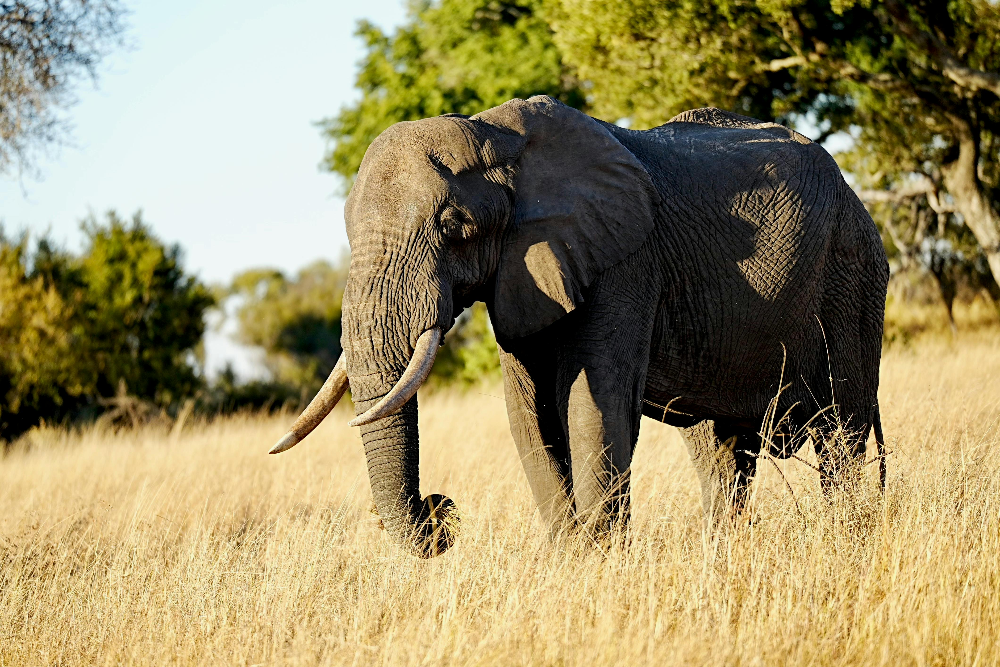

The African Elephant
Diet & Habitat
Diet: Herbivore. They consume up to 300 pounds of roots, grasses, fruit, and bark in a single day.
Habitat: They are found across most of Africa, from savannas and forests to deserts.
Fun Facts
- Elephants are highly intelligent and show complex emotions like grief and playfulness.
- An elephant's trunk has over 40,000 muscles—for comparison, humans have about 600 total.
- They communicate over long distances using low-frequency sounds humans can't hear.